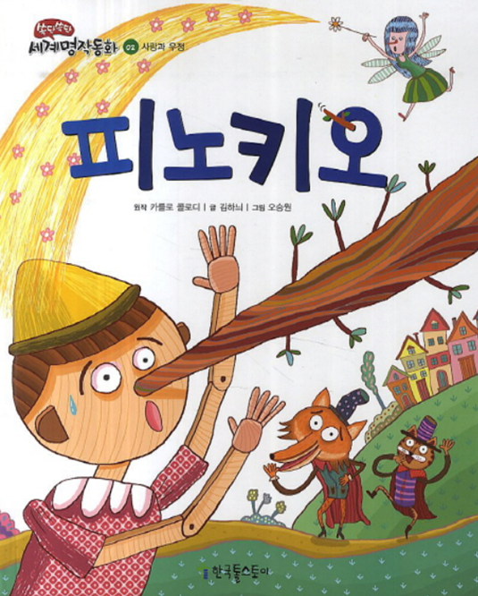

아동기 거짓말의 의의 및 특징
거짓말은 현실감이 약한 아동기에는 상상과 현실의 세계를 잘 구분하지 못하여 마치 자기 생각이 현실인 것 처럼 말하는 경우이다. 아이는 자신의 잘못한 상황에서 그 상황을 모면하거나 피하기 위함에서 부모가 물어보지도 않았는데 반응적으로 거짓말을 하게 된다.
아이는 자신의 거짓말에 우연하게 칭찬을 받는다면 거짓말이 마치 올바른 행동으로 각인되어 '세살버릇 여든까지 간다' 라는 속담처럼 증가하게 된다. 부모가 보았을 때는 거짓말처럼 느껴져 아이를 바르게 잡아주고자 애쓰다가 감정적으로 표출하지 않도록 주의해야 한다. 이러한 거짓말이 강회되어 문제가 증가된 아이는 다른 사람과 교류를 올바르게 형성시키기 위한 사회성 발달을 촉진시켜야 할 것이다.

발달에 따른 도덕적 사고력 증가의 필요
1) 만 2~4세 아이
아이는 호기심이 아주 많고, 자기중심성과 소유욕이 강해진다. 아이는 이것저것 만져보고 이리 저리 돌아다니며 양육자와 분리하기 시작하게 된다. 부모와의 분리가 불안정할 경우 자신만의 세상을 만들어 가기 위하여 거짓말을 하게 된다.
2) 만 5세 이전의 아이
아이들은 현실과 환상을 구별하는 능력이 부족해서 뻔한 거짓말을 한다. 자신의 생활을 이야기로 지어낼 수 있게 되면서 사회적 관계를 위한 거짓말을 시작한다. 이 시기 아이들은 인지발달이 충분히 이루어지지 않아 착한 사람은 나쁜 행동을 하면 안 된다는 흑백 논리로 생각하기 시작한다.
3) 6~7세 아이
아이는 언어가 발달하면서 점차 정교해진다. 아이들은 현실과 상상의 경계가 애매한 경우에 거짓말을 나타낸다. 아이는 인지적으로 자신있게 구분하기 어려워 반응적으로 거짓말을 흔하게 나타낸다.
거짓말 유형은 3가지 유형으로 구분한다.
1) 반사회적 거짓말(antisocial lies)
반사회적 거짓말은 자기방어를 위해 자신이 저지른 잘못을 감추거나 벌을 피하거나 다른 사람을 속이려는 나쁜 의도가 있다.
2) 선의의 거짓말(white lies)
선의의 거짓말은 다른 사람과 좋은 관계를 유지하려는 긍정적인 의도가 있다
3) 유희적 거짓말(trick lies)
유희적 거짓말은 즐거움을 목적으로 상대방을 즐겁게 해주려는 의도가 있는 것이다.
거짓말은 크게 세 수준으로 나눈다.
1) 자신의 의도를 타인에게 심어주기 위해 필요한 것을 모르기 때문에 금방탄로가 날 어설픈 거짓말을 한다.
2) 초기의 거짓말은 규칙을 어긴 상황에서 처벌을 받지 않으려는 의도나 자신의 이익, 또는 자신을 긍정적으로 보이게 하려는 의도의 말장난이며, 단순하게나타나는 속임수 형태이다.
3) 4세가 되면 타인의 의도를 이해할 뿐 아니라, 행동에 영향을 끼치는 믿음이 있다. 아이는 쉽게 거짓말을 하거나 아예 대답하지 않음으로써 자신의 위반을 감추게 된다. 그러나 체계적으로 거짓말을 이어가지 못하는 시기이므로 양육자는 아이의 거짓말을 손쉽게 감지할 수 있다.
거짓말을 바르게 지도하기 위한 방법
1. 지금 하는 말과 행동에 대한 책임감 인지시킨다
아이들은 보통 자신의 곤란한 상황을 벗어나기 위해 거짓말을 하는 경우가 많다. 아이들이 거짓말을 하는 것은 어떤 나쁜 뜻이 있는 것도 아니고 다른 사람을기만하기 위한 것도 아니다. 현재 존재하는 사실이나 상태와 현실적이지 못하거나실현될 가망이 없는 것을 구분하는 능력이 부족하기 때문에 자신이 하는 말이 진짜인지 아닌지도 모르는 것이다. 즉, 일반적으로 뜻 없이 그냥 아무렇게나 말을 하는 것이 대부분이므로 지금 하는 행동에 대해서 책임을 질 수 있도록 지도를 한다.
2. 공격성과 반항적인 심리적 갈등을 해결한다
친구나 동생을 때리고, 자신이 하지 않았다고 할 때, 상대방이 먼저 때렸다고 거짓말을 하는 경우 등 부모에게 자신의 잘못된 상황을 벗어나려고 한다. 아이의 내재된 공격성이나 반항적인 문제의 갈등에서 많이 나타난다. 거짓말을 한 아이보다 거짓말을 한 행동에 초점을 맞추도록 한다. 아이를 과도하게 혼내면 자신이 나쁜 아이라고 스스로 낙인을 찍어버리게 되므로 주의한다.
3. 온화한 정서적 분위기를 형성한다
아이가 거짓말을 하고 있다는 상황에 즉각적으로 반응하여 화를 내는 행동은 절대 금물이다. 거짓말에 대하여 큰 소리로 화내거나 꾸짖게 되면 아이는 사실대로 말할 용기를 잃고, 자신이 거짓말을 한 행동으로 야단맞는 것이 두려워서 더욱감추려고 한다. 만약 아이가 거짓말을 한 경우 자신의 잘못을 정직하게 말할 수있도록 부드러운 어조로 차분하게 유도한다.
4. 인지적 사고의 눈높이를 조절한다
아이의 인지적 사고 방식은 매우 단순하다. 거짓말하는 이유 중에는 바로 관심을 받고싶기 때문인 경우도 있으므로 아이의 입장에서 공감을 해주는 것이 좋다. 아이의 거짓말과 아이 자체를 동일시하지 않도록 한다. 거짓말을 습관적으로 하는 것은 잘못된 행동이라는 것을 인지시키고 약속한 벌을 실행하는 것이 좋다. 아이가 자신의 실수를 솔직하게 인정한다면 반성하는 행동이 올바른 일임을 깨닫도록 안내한다.
5. 부모의 말과 행동을 올바르게 한다
부모의 평소의 말투나 행동 습관 등을 모방하다 보면 거짓말을 자연스럽게 배워간다. 아이는 부모의 사소한 선의의 거짓말도 좋지 않은 본보기가 될 수 있다. 항상 사실대로 올바른 말과 행동의 일치를 아이에게 보여주도록 오력해야 한다. 또한 부모가 아이에게 지나치게 높은 기대를 한 경우 아이는 부모의 기대심리에 지치고 눈치를 보면서 인정을 받고자 '피노키오(동화책)'처럼 거짓말을 하는 현상이 증가하게 된다.
2021.11.03 - [분류 전체보기] - 영아기와 유아기 놀이가 인지발달에 미치는 영향 비교
영아기와 유아기 놀이가 인지발달에 미치는 영향 비교
1. 영아기 놀이가 인지발달에 미치는 영향 영유아들은 놀이라는 자연스런 형태로서 자신들의 의사를 전달한다. 영유아들은 비록 말하기를 매우 좋아하는 아이일지라도 놀이를 통해서 그들이
think-sis.tistory.com